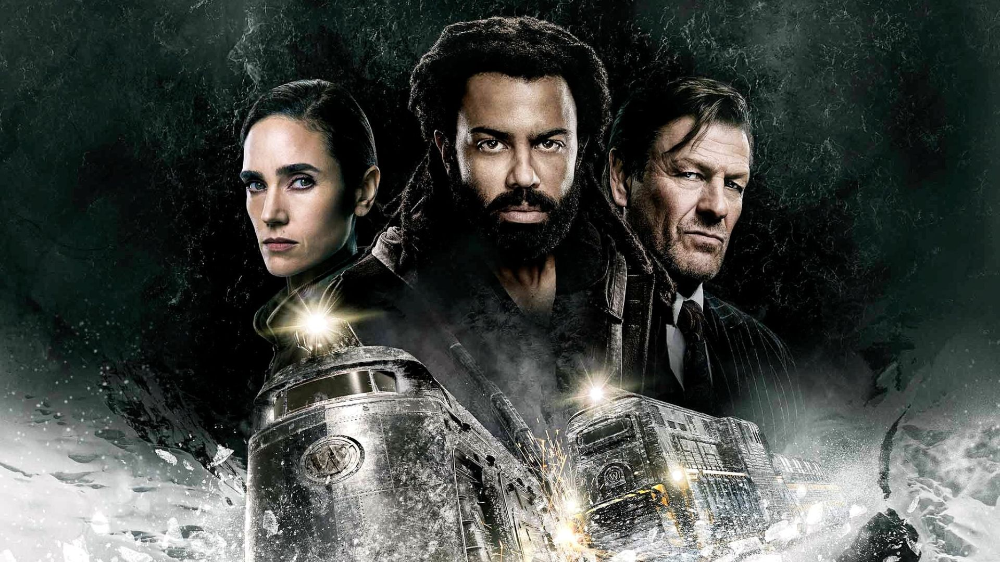
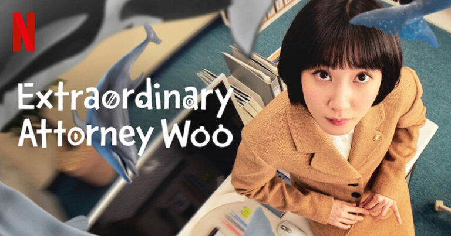
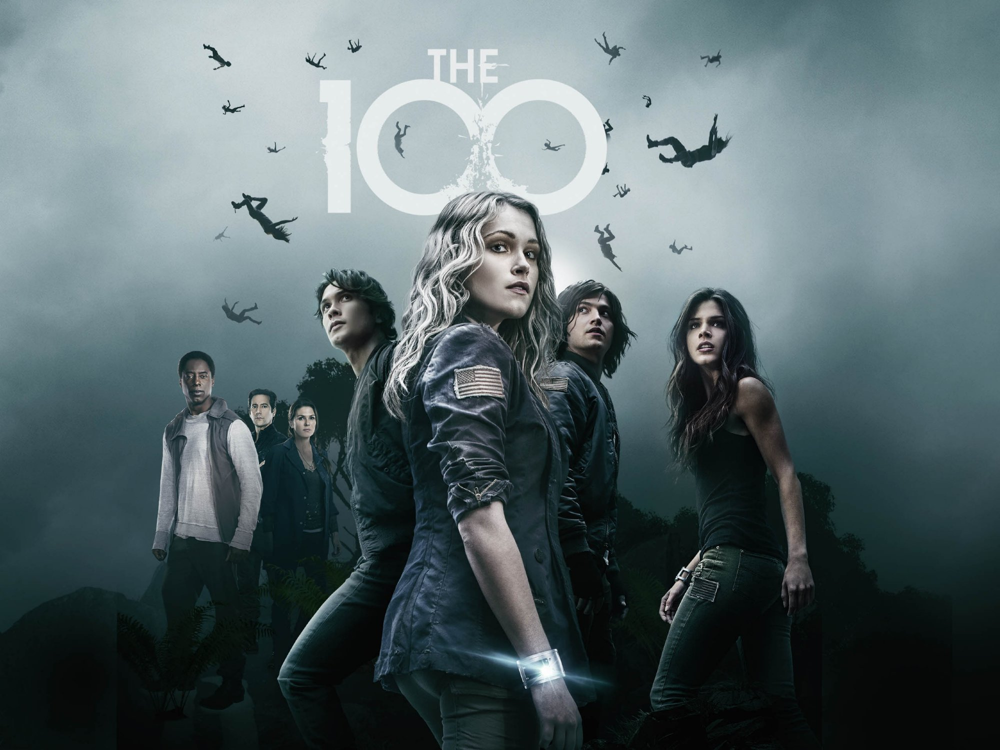
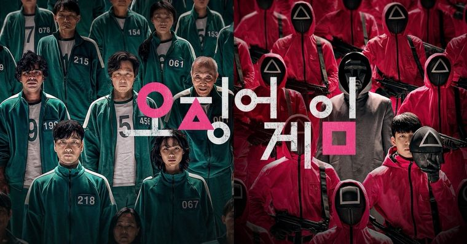
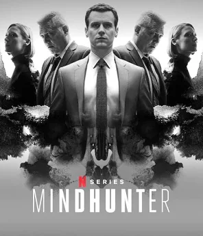

Expresso do amanha (snowpiercer)
Após o colapso climático que congelou o planeta, os últimos sobreviventes da humanidade vivem a bordo de um trem em movimento perpétuo. Mas dentro dos vagões, a luta de classes é brutal: os ricos vivem no luxo enquanto os pobres enfrentam miséria e repressão. Quando a revolução começa, cada vagão se torna um campo de batalha — e o futuro da humanidade depende de quem controla os trilhos. Uma distopia eletrizante sobre justiça, sobrevivência e o preço do progresso.
The Walking Dead

Em um mundo devastado por um apocalipse zumbi, um grupo de sobreviventes liderado pelo ex-policial Rick Grimes luta não apenas contra os mortos-vivos, mas contra os próprios limites da humanidade. Cada decisão pode ser fatal, e a verdadeira ameaça pode estar nos vivos. Prepare-se para uma jornada intensa de sobrevivência, lealdade e sacrifício.
Uma advogada extraordinaria
Woo Young-woo é uma jovem advogada brilhante com autismo e uma memória fotográfica impressionante. Enquanto enfrenta os desafios do mundo jurídico e os preconceitos da sociedade, ela encanta com sua sensibilidade única e inteligência fora do comum. Uma série emocionante, leve e inspiradora que celebra a diversidade e a força da autenticidade.
The 100
Após um apocalipse nuclear, cem jovens delinquentes são enviados de volta à Terra para testar sua habitabilidade. O que começa como uma missão de sobrevivência se transforma em uma luta épica por poder, identidade e redenção. Em um mundo sem regras, quem decide o que é certo?
Round 6
456 pessoas endividadas são convidadas para participar de jogos infantis com um prêmio milionário. O problema? Quem perde... morre. Uma crítica feroz à desigualdade social, envolta em suspense, tensão psicológica e reviravoltas chocantes. Você jogaria?
Mindhunter
Baseada em fatos reais, esta série acompanha dois agentes do FBI que mergulham na mente de assassinos em série para entender seus padrões e prevenir futuros crimes. Inteligente, sombria e perturbadora, é um mergulho fascinante na psicologia criminal.